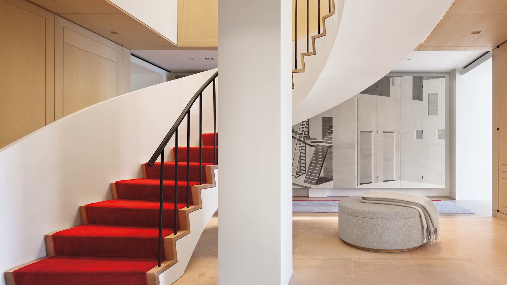
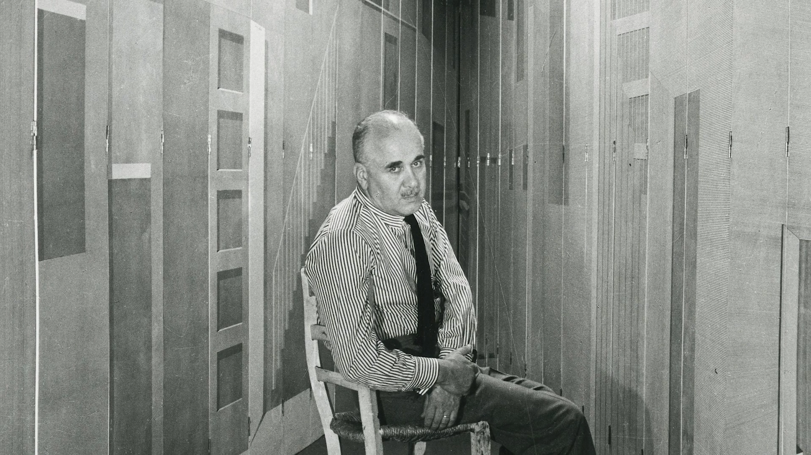
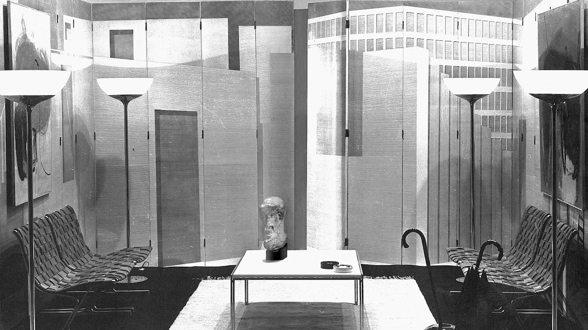
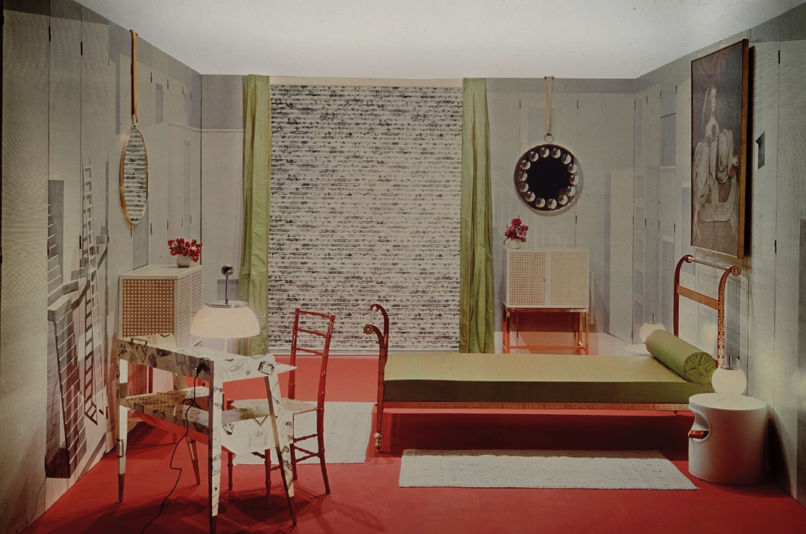
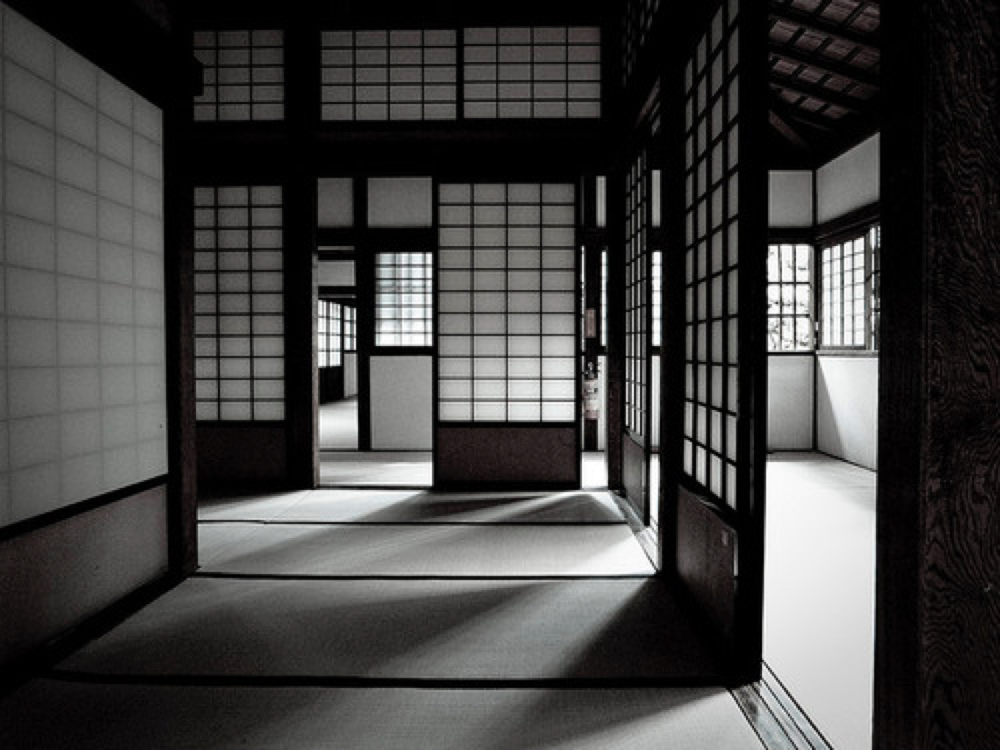

Piero Fornasetti was a phenomenally talented and prolific painter and illustrator, but his talents soared far beyond two-dimensional artwork.
Nowhere is that demonstrated more intensely than in “La Stanza Metafisica,” a prescient example of an art installation ingeniously reinterpreted by Shelton, Mindel & Associates for the home of Sting and Trudie Styler.

“La Stanza Metafisica” was designed as a space for meditation that could be set up in various configurations, according to the needs of the user.
“… where one or more people may stay and gather their thoughts, whether creative or religious or of some other kind.”
–Piero Fornasetti

Fornasetti was fascinated by the organization of interior spaces and the screen.
“… I thought it could also live another life: that is, the decoration of the walls could serve as the background for the decoration of rooms of various use."
“[The screen] could assume larger or smaller dimensions by adding or removing panels, and could be adapted to the walls of a given room… It can cover the walls entirely… it can be used in the dining room rather than in the bedroom.”
–Piero Fornasetti
“A person could change residence and there would be no need for him to lose the background of the settings in which he accustomed to live. He could take his walls with him, as they are also washable and easily transportable.”
–Piero Fornasetti

“La Stanza Metafisica” did in fact travel with Fornasttei, serving a practical purpose in setting the stage for several of his exhibitions.
The screens traveled to exhibitions at the Tea Centre in London (1958) and the Landesgewerbemuseum in Karlsruhe (1962).

He referred to screens as his favorite “children” and traced the history of the screen, noting interesting details…
“In Europe they first appear in the early Middle Ages, and were made of all sorts of materials, even wicker; they were used to separate the beds of the members of a noble entourage when they had to sleep in a single room.
–Piero Fornasetti“
Fornasetti was particularly interested in Japanese screens and was a connoisseur of the various forms, styles, and techniques.

Much influenced by Japanese design and architecture, he revered In Praise of Shadows by Junichiro Tanizaki, a 1933 treatise on traditional Japanese aesthetics still studied by architects today.